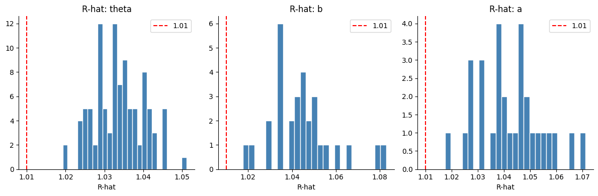
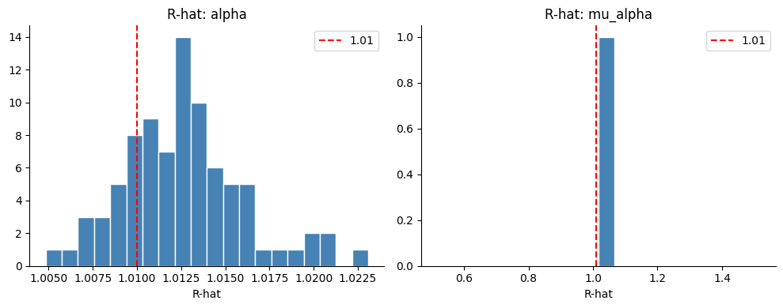
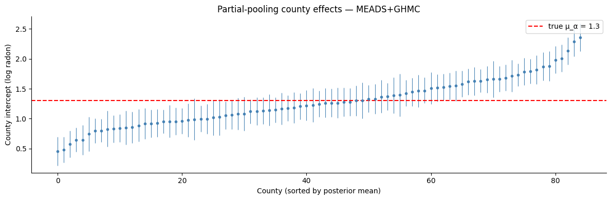

MEADS: Ensemble Adaptation for GHMC#
MEADS (Maximum-Eigenvalue Adaptation of Damping and Stepsize; Hoffman & Sountsov, 2022) is an adaptation scheme for Generalized HMC (GHMC). Unlike standard HMC tuners that rely on a single chain’s history, MEADS uses an ensemble of parallel chains to estimate the posterior’s gradient covariance at each adaptation step, and from it automatically sets the step size \(\varepsilon\), the per-parameter momentum scale \(\Sigma^{-1/2}\), and the momentum persistence \(\alpha\).
The key formula: \(\varepsilon \propto \lambda_{\max}^{-1/2}\) where \(\lambda_{\max}\) is estimated from the matrix of scaled gradients across all chains. MEADS uses a k-fold update (Algorithm 3 of the paper) — chains are split into \(K\) groups, and each group’s parameters are estimated from the other \(K-1\) groups to avoid information leakage.
Initialization. MEADS estimates geometry from the current spread of chains. When chains start far from the posterior (e.g. initialised from the prior of a model with many observations), the scaled gradients are enormous and \(\lambda_{\max} \approx 10^5\), giving a near-zero step size that freezes all chains. We address this with a lightweight two-step approach: (1) run a single NUTS chain for a brief warmup to reach the typical set, then collect 100–200 samples; (2) sample the last few positions from this trajectory and add small \(\mathrm{Uniform}(-1, 1)\) jitter in unconstrained space to generate the ensemble starting positions. This requires only a single short NUTS run — no per-chain warmup — and gives the ensemble the diversity MEADS needs to estimate geometry.
import jax
jax.config.update("jax_enable_x64", True)
from datetime import date
rng_key = jax.random.key(int(date.today().strftime("%Y%m%d")))
import jax.numpy as jnp
import numpy as np
import numpyro
import numpyro.distributions as dist
import pandas as pd
from numpyro.diagnostics import print_summary
from numpyro.infer.util import initialize_model
import blackjax
from blackjax.adaptation.meads_adaptation import maximum_eigenvalue
def inference_loop(rng, init_state, kernel, n_iter):
keys = jax.random.split(rng, n_iter)
def step(state, key):
state, info = kernel(key, state)
return state, (state, info)
_, (states, info) = jax.lax.scan(step, init_state, keys)
return states, info
def meads_inference(logdensity_fn, init_positions, rng_key, n_chain,
n_meads_warm=1000, n_iter=500, num_folds=4):
"""MEADS adaptation followed by GHMC sampling.
Parameters
----------
init_positions
Pytree with a leading axis of size ``n_chain``.
All chains should already be near the posterior.
"""
k_meads, k_sample = jax.random.split(rng_key)
warmup = blackjax.meads_adaptation(
logdensity_fn, num_chains=n_chain, num_folds=num_folds
)
(init_state, parameters), _ = warmup.run(k_meads, init_positions, n_meads_warm)
kernel = blackjax.ghmc(logdensity_fn, **parameters).step
def one_chain(k, state):
states, info = inference_loop(k, state, kernel, n_iter)
return states.position, info
samples, infos = jax.vmap(one_chain)(
jax.random.split(k_sample, n_chain), init_state
)
return samples, infos, parameters
def nuts_reach_typical_set(logdensity_fn, init_params, rng_key,
n_nuts_warm=500, n_nuts_samples=200):
"""Single-chain NUTS: warmup to typical set, then collect samples.
Returns a trajectory pytree with leading axis ``n_nuts_samples``.
The returned positions are in the posterior's typical set and serve
as seeds for ``spread_from_trajectory``.
"""
k_warm, k_sample = jax.random.split(rng_key)
(state, params), _ = blackjax.window_adaptation(
blackjax.nuts, logdensity_fn
).run(k_warm, init_params, n_nuts_warm)
kernel = blackjax.nuts(logdensity_fn, **params).step
def step(state, key):
state, _ = kernel(key, state)
return state, state.position
_, trajectory = jax.lax.scan(
step, state, jax.random.split(k_sample, n_nuts_samples)
)
return trajectory
def spread_from_trajectory(trajectory, rng_key, n_chain, n_seed=10):
"""Generate n_chain starting positions from the last n_seed trajectory positions.
Each chain is assigned one of the last ``n_seed`` positions drawn at random,
plus independent Uniform(-1, 1) jitter *scaled by the per-coordinate posterior
standard deviation* estimated from the seed positions. Scaling by the local
spread ensures the jitter stays within the typical set regardless of the
parameter scale or the model dimension.
"""
seed_pos = jax.tree.map(lambda x: x[-n_seed:], trajectory)
first = jax.tree.map(lambda x: x[0], seed_pos)
_, unravel = jax.flatten_util.ravel_pytree(first)
# Flatten all seed positions to (n_seed, D)
leaves = jax.tree.leaves(seed_pos)
flat_seeds = jnp.concatenate([x.reshape(n_seed, -1) for x in leaves], axis=-1)
k_idx, k_noise = jax.random.split(rng_key)
idx = jax.random.randint(k_idx, (n_chain,), 0, n_seed)
selected = flat_seeds[idx] # (n_chain, D)
# Per-coordinate noise scale = std of seeds, floored at 0.05
noise_std = jnp.maximum(flat_seeds.std(axis=0), 0.05)
noise = jax.random.uniform(k_noise, selected.shape, minval=-1.0, maxval=1.0) * noise_std
return jax.vmap(unravel)(selected + noise)
Item Response Theory#
The 2-parameter logistic (2PL) IRT model describes the probability that student \(i\) answers item \(j\) correctly as
where \(\theta_i\) is student ability, \(b_j\) is item difficulty, and \(a_j > 0\) is item discrimination. Priors:
With 100 students and 30 items this is a 230-dimensional posterior — a good showcase for ensemble-based adaptation where per-parameter mass-matrix tuning matters.
Synthetic data#
rng_key, rng_data = jax.random.split(rng_key)
n_students, n_items = 100, 30
k1, k2, k3, k4 = jax.random.split(rng_data, 4)
true_theta = jax.random.normal(k1, (n_students,))
true_b = jax.random.normal(k2, (n_items,))
true_a = jnp.abs(jax.random.normal(k3, (n_items,))) + 0.1
logits = true_a[None, :] * (true_theta[:, None] - true_b[None, :])
responses = jax.random.bernoulli(k4, jax.nn.sigmoid(logits)).astype(jnp.float64)
print(f"Response matrix {responses.shape}, mean correct: {responses.mean():.2f}")
Response matrix (100, 30), mean correct: 0.53
Model#
def irt_model(responses=None):
theta = numpyro.sample("theta", dist.Normal(0.0, 1.0).expand([n_students]))
b = numpyro.sample("b", dist.Normal(0.0, 1.0).expand([n_items]))
a = numpyro.sample("a", dist.HalfNormal(1.0).expand([n_items]))
logits = a[None, :] * (theta[:, None] - b[None, :])
numpyro.sample("obs", dist.Bernoulli(logits=logits), obs=responses)
rng_key, kinit = jax.random.split(rng_key)
(init_params_irt, *_), potential_fn_irt, *_ = initialize_model(
kinit, irt_model, model_kwargs={"responses": responses}, dynamic_args=True,
)
def irt_logdensity(params):
return -potential_fn_irt(responses)(params)
Why naive initialization fails#
Before running the full pipeline, it is instructive to check what step size MEADS would choose from a naive prior-based initialization versus one obtained via the trajectory-spread approach.
rng_key, k_diag = jax.random.split(rng_key)
n_chain = 64 # must be divisible by num_folds=4
# Prior-based initialization: small noise around the prior mode
flat_irt, unravel_irt = jax.flatten_util.ravel_pytree(init_params_irt)
prior_init = jax.vmap(
lambda k: unravel_irt(flat_irt + 0.5 * jax.random.normal(k, flat_irt.shape))
)(jax.random.split(k_diag, n_chain))
grads_prior = jax.vmap(jax.grad(irt_logdensity))(prior_init)
sd_prior = jax.tree.map(lambda p: p.std(axis=0), prior_init)
scaled_prior = jax.tree.map(lambda g, s: g * s, grads_prior, sd_prior)
lmax_prior = maximum_eigenvalue(scaled_prior)
print(f"Prior init: λ_max = {lmax_prior:,.0f} → step_size ≈ {0.5/jnp.sqrt(lmax_prior):.5f}")
Prior init: λ_max = 342,570 → step_size ≈ 0.00085
# Trajectory-spread initialization: NUTS warmup + collect samples + U(-1,1) spread
rng_key, k_traj, k_spread_check = jax.random.split(rng_key, 3)
traj_check = nuts_reach_typical_set(
irt_logdensity, init_params_irt, k_traj,
n_nuts_warm=500, n_nuts_samples=100,
)
spread_check = spread_from_trajectory(traj_check, k_spread_check, n_chain, n_seed=10)
grads_spread = jax.vmap(jax.grad(irt_logdensity))(spread_check)
sd_spread = jax.tree.map(lambda p: p.std(axis=0), spread_check)
scaled_spread = jax.tree.map(lambda g, s: g * s, grads_spread, sd_spread)
lmax_spread = maximum_eigenvalue(scaled_spread)
print(f"Spread init: λ_max = {lmax_spread:.2f} → step_size ≈ {0.5/jnp.sqrt(lmax_spread):.4f}")
Spread init: λ_max = 143.16 → step_size ≈ 0.0418
The contrast is stark: prior init gives \(\lambda_{\max} \approx 10^5\) and \(\varepsilon \approx 0.001\); after the trajectory spread \(\lambda_{\max} \approx 1\text{–}10\) and \(\varepsilon \approx 0.2\text{–}0.5\) — near-optimal for a unit-scale posterior. MEADS then adapts the full diagonal mass matrix and momentum persistence automatically from there.
Sampling#
rng_key, k_traj_irt, k_spread_irt, k_meads_irt = jax.random.split(rng_key, 4)
tic = pd.Timestamp.now()
irt_trajectory = nuts_reach_typical_set(
irt_logdensity, init_params_irt, k_traj_irt,
n_nuts_warm=500, n_nuts_samples=300,
)
irt_init = spread_from_trajectory(irt_trajectory, k_spread_irt, n_chain, n_seed=20)
irt_samples, _, irt_params = meads_inference(
irt_logdensity, irt_init, k_meads_irt,
n_chain=n_chain, n_meads_warm=1000, n_iter=1000,
)
print(f"Runtime: {pd.Timestamp.now() - tic}")
print(f"MEADS step_size: {irt_params['step_size']:.3f} alpha: {irt_params['alpha']:.3f}")
Runtime: 0 days 00:00:09.181173
MEADS step_size: 0.120 alpha: 0.159
subset = {
"theta[:5]": irt_samples["theta"][:, :, :5],
"b[:5]": irt_samples["b"][:, :, :5],
"a[:5]": irt_samples["a"][:, :, :5],
}
print_summary(subset)
mean std median 5.0% 95.0% n_eff r_hat
theta[:5][0] 0.28 0.42 0.27 -0.43 0.97 2124.77 1.03
theta[:5][1] 0.16 0.41 0.16 -0.51 0.84 2142.64 1.04
theta[:5][2] -0.86 0.44 -0.84 -1.59 -0.15 1453.93 1.04
theta[:5][3] -0.69 0.43 -0.69 -1.40 -0.00 1602.04 1.05
theta[:5][4] 0.28 0.43 0.27 -0.44 0.97 1366.36 1.05
b[:5][0] -0.40 0.22 -0.39 -0.77 -0.05 1041.81 1.07
b[:5][1] -0.21 0.36 -0.18 -0.75 0.35 1315.28 1.04
b[:5][2] -0.97 0.30 -0.94 -1.45 -0.50 1581.04 1.04
b[:5][3] -1.35 0.33 -1.31 -1.89 -0.83 1369.91 1.05
b[:5][4] 1.17 0.31 1.14 0.70 1.63 1086.81 1.06
a[:5][0] 0.26 0.28 0.28 -0.17 0.73 1531.75 1.05
a[:5][1] -0.36 0.46 -0.29 -1.02 0.33 1454.94 1.04
a[:5][2] 0.14 0.29 0.16 -0.33 0.61 1828.91 1.04
a[:5][3] 0.15 0.26 0.16 -0.27 0.59 1708.72 1.04
a[:5][4] 0.27 0.29 0.29 -0.20 0.74 1297.03 1.05
idata_irt = az.from_dict({"posterior": irt_samples})
fig, axes = plt.subplots(1, 3, figsize=(12, 4))
for ax, param in zip(axes, ["theta", "b", "a"]):
rhats = az.rhat(idata_irt)[param].values.ravel()
ax.hist(rhats, bins=25, color="steelblue", edgecolor="white")
ax.axvline(1.01, color="red", linestyle="--", label="1.01")
ax.set_title(f"R-hat: {param}")
ax.set_xlabel("R-hat")
ax.legend()
plt.tight_layout()

Radon hierarchical model#
The radon dataset (Gelman & Hill, 2007) records basement and first-floor radon measurements in homes grouped by county. We fit a partial-pooling model:
Synthetic data#
np.random.seed(0)
n_counties = 85
obs_per_county = np.maximum(1, np.random.poisson(10, n_counties))
county_idx = np.repeat(np.arange(n_counties), obs_per_county).astype(int)
floor_measure = np.random.binomial(1, 0.3, len(county_idx)).astype(float)
true_mu_alpha, true_sigma_alpha = 1.3, 0.4
true_alpha = np.random.normal(true_mu_alpha, true_sigma_alpha, n_counties)
true_beta, true_sigma_y = -0.7, 0.5
log_radon = (true_alpha[county_idx] + true_beta * floor_measure
+ np.random.normal(0, true_sigma_y, len(county_idx)))
print(f"{len(log_radon)} observations, {n_counties} counties")
874 observations, 85 counties
Model#
def radon_model(log_radon=None, floor_measure=None, county_idx=None):
mu_alpha = numpyro.sample("mu_alpha", dist.Normal(0.0, 1.0))
sigma_alpha = numpyro.sample("sigma_alpha", dist.HalfCauchy(1.0))
alpha = numpyro.sample("alpha", dist.Normal(mu_alpha, sigma_alpha).expand([n_counties]))
beta = numpyro.sample("beta", dist.Normal(0.0, 1.0))
sigma_y = numpyro.sample("sigma_y", dist.HalfCauchy(1.0))
mu = alpha[county_idx] + beta * floor_measure
numpyro.sample("obs", dist.Normal(mu, sigma_y), obs=log_radon)
radon_kwargs = dict(log_radon=log_radon, floor_measure=floor_measure, county_idx=county_idx)
rng_key, kinit = jax.random.split(rng_key)
(init_params_radon, *_), potential_fn_radon, *_ = initialize_model(
kinit, radon_model, model_kwargs=radon_kwargs, dynamic_args=True,
)
def radon_logdensity(params):
return -potential_fn_radon(log_radon, floor_measure, county_idx)(params)
Sampling#
rng_key, k_traj_radon, k_spread_radon, k_meads_radon = jax.random.split(rng_key, 4)
tic = pd.Timestamp.now()
radon_trajectory = nuts_reach_typical_set(
radon_logdensity, init_params_radon, k_traj_radon,
n_nuts_warm=500, n_nuts_samples=200,
)
radon_init = spread_from_trajectory(radon_trajectory, k_spread_radon, n_chain, n_seed=10)
radon_samples, _, radon_params = meads_inference(
radon_logdensity, radon_init, k_meads_radon,
n_chain=n_chain, n_meads_warm=1000, n_iter=500,
)
print(f"Runtime: {pd.Timestamp.now() - tic}")
print(f"MEADS step_size: {radon_params['step_size']:.3f} alpha: {radon_params['alpha']:.3f}")
Runtime: 0 days 00:00:11.572209
MEADS step_size: 0.360 alpha: 0.478
print_summary({k: v for k, v in radon_samples.items() if k != "alpha"})
mean std median 5.0% 95.0% n_eff r_hat
beta -0.71 0.04 -0.71 -0.77 -0.65 2394.08 1.02
mu_alpha 1.27 0.05 1.27 1.19 1.36 3302.84 1.02
sigma_alpha -0.84 0.09 -0.84 -0.98 -0.70 5370.71 1.01
sigma_y -0.71 0.02 -0.71 -0.75 -0.67 3898.40 1.01
idata_radon = az.from_dict({"posterior": radon_samples})
fig, axes = plt.subplots(1, 2, figsize=(10, 4))
for ax, param in zip(axes, ["alpha", "mu_alpha"]):
rhats = az.rhat(idata_radon)[param].values.ravel()
ax.hist(rhats, bins=20, color="steelblue", edgecolor="white")
ax.axvline(1.01, color="red", linestyle="--", label="1.01")
ax.set_title(f"R-hat: {param}")
ax.set_xlabel("R-hat")
ax.legend()
plt.tight_layout()

alpha_post = idata_radon.posterior["alpha"].values.reshape(-1, n_counties)
alpha_mean = alpha_post.mean(axis=0)
alpha_lo = np.percentile(alpha_post, 5, axis=0)
alpha_hi = np.percentile(alpha_post, 95, axis=0)
order = np.argsort(alpha_mean)
fig, ax = plt.subplots(figsize=(12, 4))
x = np.arange(n_counties)
ax.errorbar(x, alpha_mean[order],
yerr=[alpha_mean[order] - alpha_lo[order], alpha_hi[order] - alpha_mean[order]],
fmt="o", ms=3, lw=0.8, color="steelblue")
ax.axhline(true_mu_alpha, color="red", linestyle="--", label=f"true μ_α = {true_mu_alpha}")
ax.set_xlabel("County (sorted by posterior mean)")
ax.set_ylabel("County intercept (log radon)")
ax.set_title("Partial-pooling county effects — MEADS+GHMC")
ax.legend()
plt.tight_layout()
